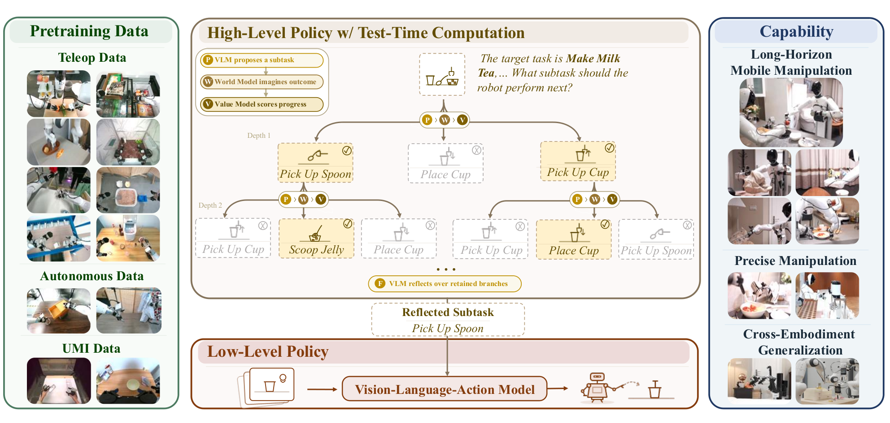
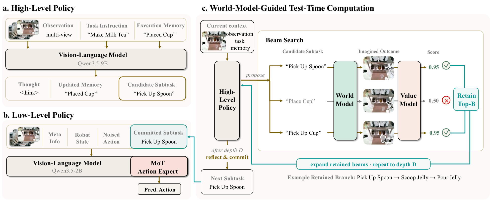

제출: 2026년 8월 17일 · 학습 데이터 약 40,115시간의 이종 실로봇 데이터 · 40차원 통합 액션 공간
한 줄 요약 (TL;DR)
장기(long-horizon) 조작 문제를 고수준 서브태스크 생성과 저수준 실행으로 나눈 뒤, 어려운 결정에서만 월드 모델(다음 관찰을 상상해 주는 모델)이 후보들을 미리 굴려 보고 가치 모델이 채점하는 테스트타임 컴퓨트(TTC, 추론 시점에 계산량을 늘려 정확도 올리기)를 붙였다. 결과적으로 4개 실로봇 장기 태스크 평균 성공률 45%(π0.5 22.5%, GR00T 2.5%)로 큰 폭 우위. TTC 활성 시 "Book Organization" 서브태스크 예측 정확도가 50→74%.
1배경 · 문제의식
기존 VLA(Vision-Language-Action, 화면·언어·로봇 액션을 한 모델에서 다루는 정책)은 대부분 단일 스트림으로 지시를 직접 액션으로 매핑한다. 하지만 실제 가사 태스크(설거지, 요리, 청소)는 여러 서브태스크가 시간에 걸쳐 얽혀 있어 부분 관찰(예: "간을 이미 했는지"는 화면에 안 보임)과 중간 실패 복구 문제가 심각하다. 저자들은 이런 부분을 고수준 정책이 서브태스크 계획을 뽑고, 애매한 순간에는 월드 모델이 결과를 예측해 여러 후보를 비교하며, 실행 메모리가 진행 상황을 기록하도록 재설계한다.
직관: 사람이 요리할 때 "다음에 뭘 할지" 매번 심사숙고하지 않지만, 애매한 순간엔 "지금 소금 넣고 볶으면 어떻게 될까?"를 잠깐 상상해 본다. τ₀-VLA의 TTC는 그 "짧은 상상"을 계산 예산으로 조절하는 장치다.
2핵심 Contribution
월드 모델 유도 TTC — 후보 서브태스크 z에 대해 월드 모델 W가 종말 관찰 ô=W(õ,z)를 상상, 가치 모델 V가 v=V(ℓ,z,ô)로 채점, beam search(가장 유망한 상위 B개 분기만 남기는 탐색)로 유망한 것만 남겨 depth D까지 확장 → 반사(reflective) 모델이 최종 서브태스크 확정. 즉 어려운 결정에만 더 많은 계산을 쓰는 구조.
실행 메모리(execution memory) ℳₜ — 완료된 진행 상황을 시퀀스로 유지해 관찰만으로 파악 안 되는 상태(예: 이미 넣은 조미료)를 기록. 메모리 교란 학습(뒤처지거나·앞서가거나·오염된 예시)으로 자기 교정 능력을 학습.
이종 40,000시간 실로봇 데이터로 대규모 사전학습 — 고정형·이동형·양팔형 로봇, 사람 시연·자율 롤아웃·UMI(휴대형 그리퍼) 녹화를 모두 통합해 40차원 단일 액션 공간으로 학습. 저수준 정책 백본은 MoT(Mixture-of-Transformers) 액션 전문가를 사용.
3Method
계층 구조: 고수준 정책의 4 컴포넌트
고수준 정책은 4개의 서브 모델로 구성된다.
Proposal 모델: 현재 관찰과 메모리를 받아 실행 메모리를 갱신하고 초기 서브태스크 후보 z를 뽑는다.
월드 모델 W: 현재 관찰 õ와 후보 z를 조건으로 종말 시점의 헤드 카메라 이미지 ô를 예측(즉, "이 서브태스크가 끝나면 카메라에 뭐가 보일까"의 상상). 픽셀 수준으로 예측한다.
가치 모델 V: v=V(ℓ,z,ô) — 언어 지시 ℓ, 후보 z, 상상 이미지 ô 셋을 보고 그 후보가 얼마나 그럴싸한지 점수 매김.
Reflective 모델: beam search로 남은 여러 분기(가지)를 종합해 최종 서브태스크 하나를 확정.
직관: proposal은 "일단 아이디어를 낸다", world model은 "그걸 실제 해보면 어떨지 상상한다", value는 "그 상상이 좋은가 채점한다", reflective는 "여러 상상을 종합해 결론을 낸다". Plan Once(한 방에 결정)나 Best-of-N(N개 뽑고 최고 하나 고르기)과 달리, τ₀-VLA는 단계별로 후보를 확장·가지치기하는 트리 탐색이다.
저수준 정책: MoT 액션 전문가
비전-언어 백본 + MoT(Mixture-of-Transformers, 트랜스포머 전문가 여러 개 중 필요한 것만 활성) 액션 전문가. 관찰·자기감각(proprioception)·서브태스크를 받아 통합 40차원 액션을 출력. 고정형/이동형/양팔형 모두 이 하나의 액션 공간으로 통합해 크로스-임바디먼트를 지원.
실행 메모리 ℳₜ
메모리는 완료 진행 상황을 순차 기록한다. Proposal이 매 스텝마다 갱신하고, 실제 실행이 끝난 뒤에만 실제 관찰이 병합된다(즉 상상 롤아웃은 메모리에 안 남음 → 실제와 상상의 오염 방지). 학습에서는 메모리가 지연/선행/오염된 상황을 인위적으로 주입해, 관찰과 충돌해도 자기 교정하도록 훈련.
데이터 & 학습
저수준 정책
약 40,000시간 이종 실로봇 데이터 (고정·이동·양팔; 시연·자율 롤아웃·UMI-스타일 녹화)
공동학습
멀티모달 비전-언어 데이터 병행
고수준 자동 라벨
기존 태스크/스테이지/실행가능 서브태스크 어노테이션, 멀티뷰 시연 분할, 메모리 교란 예시(사람 추가 라벨 불필요)
월드 모델 학습
서브태스크 정렬된 시작-끝 프레임 쌍으로 종말 이미지 예측 학습
4실험 결과
Table I — 실로봇 장기 태스크 4종 (각 10 trial)
모델
Clean Room
Prepare Ingr.
Tomato&Egg
Milk Tea
Avg SR
GR00T
0/10
1/10
0/10
0/10
2.5%
LingBot-VLA
0/10
0/10
0/10
0/10
0%
π0.5
4/10
2/10
0/10
3/10
22.5%
τ₀-VLA (계층, 탐색 X)
5/10
4/10
4/10
5/10
45.0%
τ₀-VLA는 월드 모델 탐색 없이 계층 구조만으로도 π0.5 대비 2배 성공률. Tomato&Egg처럼 조미료·상태가 부분관찰인 태스크에서 특히 차이 큼(0→40%).
Table II — 크로스-임바디먼트 (각 10 trial)
모델
Laundry
Cotton Pad
Eyelash Curler
Makeup Puff
GR00T
4/10
10/10
8/10
7/10
π0.5
9/10
9/10
8/10
7/10
τ₀-VLA
10/10
10/10
9/10
10/10
Table III — TTC 유무 비교 (각 10 trial)
설정
Milk Tea
Book Organization
Clean Room
Plan Once (탐색 X)
5/10
6/10
5/10
TTC (제안)
7/10
9/10
7/10
TTC는 특히 Book Organization(정리 순서·위치가 애매한 상황)에서 30%p 상승 — "어려운 결정에 계산을 더 쓰라"는 가설이 실증.
Figure 4 — 개-루프 서브태스크 예측 정확도 (분포 외 포함)
Book Organization의 OOD(out-of-distribution, 학습에 없던 상황) 조건에서 TTC 74.0% vs Plan Once 50.0% vs Best-of-N 57.5%. 단순히 여러 개 뽑고 최고를 고르는 방식(Best-of-N)보다도 트리 확장·반사 모델이 유리함을 보임.
5Ablation (주요 발견)
실행 메모리 기여: 메모리 없이 직접 실행하면 Clean Room·Tomato&Egg처럼 중간 상태가 카메라에 안 보이는 태스크에서 실패(모델이 이미 한 조미 단계를 반복하거나 건너뜀). 메모리가 있으면 진행 모호성 해소 + 중간 실패 복구 가능.
TTC vs 기저선: Plan Once(한 번의 forward), Best-of-N(N개 샘플 후 최고 선택, 재귀 확장 없음) 모두 상회. 재귀적 beam 확장 + 반사가 순위 없는 Best-of-N보다 낫다는 뜻.
계산-정확도 트레이드오프 (Figure 5): 낮은 예산에서 정확도가 급격히 오르고 이후 완만해짐 → 중간 예산에서 이미 유리한 트레이드오프. 즉 실제 배포에서 매 스텝 최대 TTC를 안 써도 됨.
6핵심 Figure / Table

Figure 1 — τ₀-VLA 개요. 고수준(월드 모델 유도 탐색)과 저수준(MoT 액션 전문가) 정책이 협력해 장기 태스크를 실행. TTC는 어려운 결정에서만 계산량을 늘림. (출처: arXiv:2608.16885)

Figure 2 — 계층 프레임워크. Proposal → World Model → Value → Reflective의 4단 파이프라인, beam search로 유망한 서브태스크 분기 유지. 실행 메모리 ℳₜ가 실제 실행 후에만 관찰과 합쳐진다. (출처: arXiv:2608.16885)
Table I·III이 논문의 핵심. 계층 구조만으로도 π0.5 대비 22.5→45%로 두 배가 되고, TTC를 켜면 "정리 순서가 애매한" 태스크에서 6/10→9/10로 상승. 계산을 어디에 쓰느냐가 최근 로봇 파운데이션 모델의 새 축임을 보임.